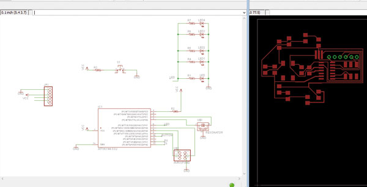
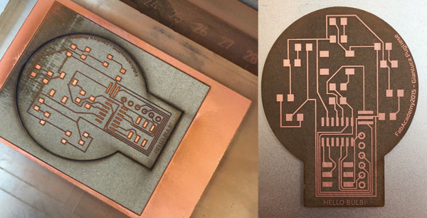
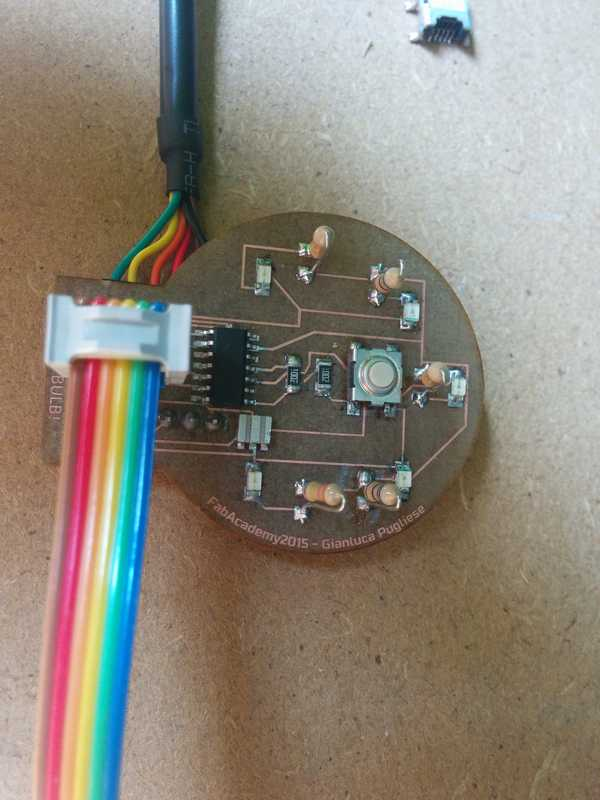

Exercise 6
04.03.2015
Electronics Design
Assignment
- Redraw the echo hello-world board,
- add (at least) a button and LED (with current-limiting resistor)
- check the design rules, and make it
Hello World.... no... Hello Bulb
During the redesign of the Hello world board I think that is a very simple board without a pracatical use, so I decided to make one similar but a little more useful.
I called it HELLO BULB
This is the BOM:
- 6-pin programming header to program the board
- Attiny44A
- FTDI header for power supply and computer connection
- 20 MHz Resonator external crystal clock generator, Attiny44A can work also @20Mhz
- Capacitor for a better quality input current
- 4 680 ohm Resistors
- 330 ohm Resistors
- 4 red LED
- 1 blue LED
- 10k resistor
The resistor to reduce the LED voltage are calculated with this Led Calculator


After laser engraving I had to clean the board with water and a sponge to remove the burned parts and clean the circuit.
Then I soldered all the components starting form the Attiny44, the resonator, resistors and LEDs and the header to connect ISP and FTDI cable
this is the result of the finished board

Here you can download the
EAGLE
FILE